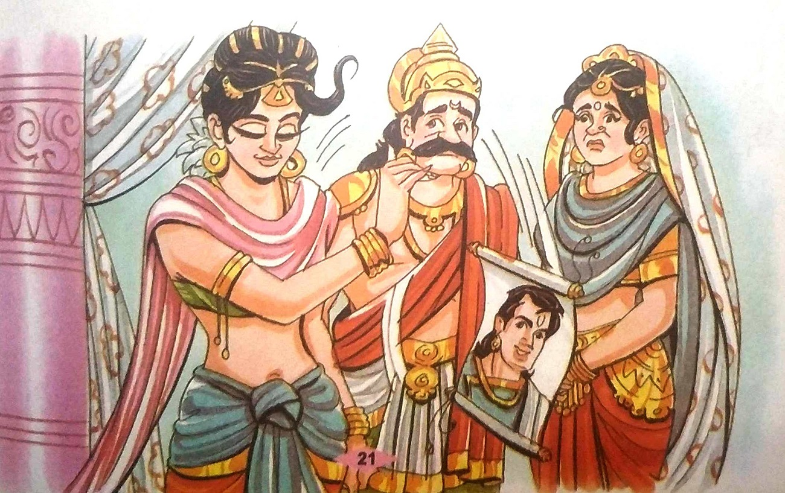
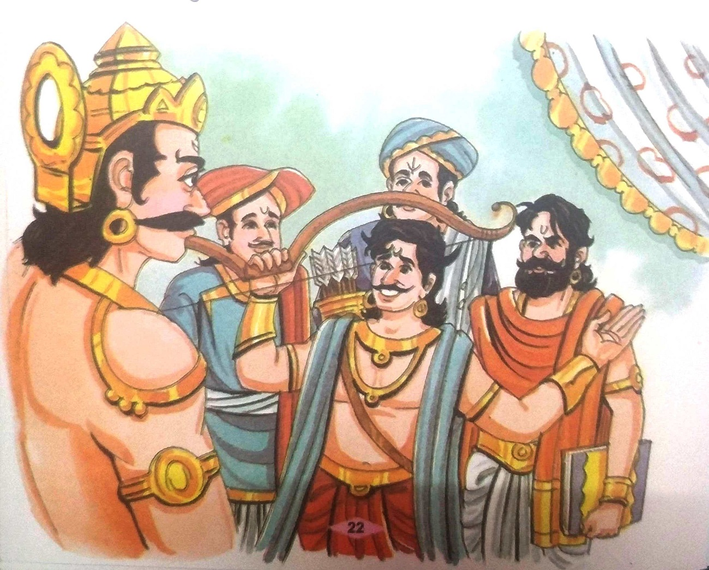
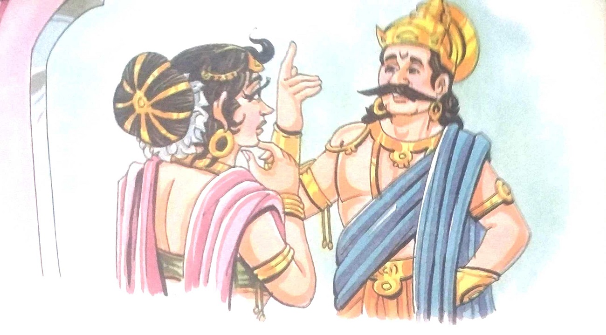

૨૦-યોગ્ય વર
રાજા વિક્રમ મૃતદેહ લાવવા ફરી ઝાડ પાસે ગયો. તેઓએ લાશને ઝાડ પરથી નીચે ઉતારી અને ચાલવા
લાગ્યા. વેતાલાએ ફરી પોતાની નવી વાર્તા શરૂ કરી- ચંપક નામનું રાજ્ય હતું. તેના રાજાનું નામ ચંપકઘર
હતું. તેમની રાણીનું નામ સુલોચના અને પુત્રીનું નામ ત્રિભુવન સુંદરી હતું. રાજકુમારી ખૂબ જ સુંદર
હતી. જેમ જેમ તે મોટી થતી ગઈ તેમ તેમ તેની સુંદરતા પણ વધી ગઈ.
હવે રાજા અને રાણીને દીકરીના લગ્નની ચિંતા થવા લાગી. તેઓએ તેના માટે યોગ્ય વરની શોધ શરૂ
કરી. ઘણા રાજકુમારોએ તેમના ચિત્રો અને વર્ણનો મોકલ્યા. રાજકુમારીએ તે બધાને નકારી કાઢ્યા. એક દિવસ
રાજાએ કહ્યું, "દીકરી, જો તું રાજી હોય તો હું પણ શરતોને માન આપીશ."
તેની પુત્રીની સંમતિ મળ્યા પછી, રાજાએ જાહેરાત કરી કે "હું મારી પુત્રીના લગ્ન એક યુવાન સાથે કરીશ
જે ખૂબ જ સુંદર, વિદ્વાન અને શક્તિશાળી છે." એક દિવસ ચાર જુદા જુદા રાજ્યોમાંથી ચાર રાજકુમારો
આવ્યા, તેઓ રાજા ચંપકઘરને મળ્યા.

પહેલા રાજકુમારે કહ્યું, “હું વણકર છું અને કપડાં વણું છું. હું મારા પસંદ કરેલા કપડા 5
લાખ રૂપિયામાં વેચું છું. આ કળા બીજા કોઈને ખબર નથી."
બીજા રાજકુમારે કહ્યું, "હું જમીન અને પાણીમાં રહેતા તમામ જીવોની ભાષાઓ જાણું છું." ત્રીજા
રાજકુમારે કહ્યું, "હું પૃથ્વી પરનો સૌથી વિદ્વાન માણસ છું. કોઈ પણ મારી સાથે સ્પર્ધા કરી શકે તેમ
નથી."
ચોથા રાજકુમારે કહ્યું, “હું એક કુશળ તીરંદાજ છું. ફક્ત તે સાંભળીને જ હું તેને જોયા વિના તેના પર
મારું તીર ચલાવી શકું છું. ,
ચારેય રાજકુમારોની અદભૂત પ્રતિભા વિશે સાંભળીને રાજા મૂંઝવણમાં મુકાઈ ગયો.

તેણે રાજકુમારીને બોલાવી અને ચાર રાજકુમારો વિશે જણાવ્યું. રાજકુમારી પણ કોઈ નિર્ણય
લઈ શકી નહિ અને તેથી ચૂપ રહી. ચારેય રાજકુમારો રાજાના નિર્ણયની રાહ જોતા ગેસ્ટ હાઉસમાં આરામ કરતા
હતા, જ્યારે રાજા અનિશ્ચિત સ્થિતિમાં બેઠો હતો.

એમ કહીને વેતાલાએ કહ્યું, "રાજા વિક્રમ, મને કહો કે રાજકુમારી માટે કયો રાજકુમાર સૌથી
વધુ યોગ્ય હતો. રાજા વિક્રમે તરત જ જવાબ આપ્યો, "વસ્ત્રો વણનાર અને વેચનાર રાજકુમાર મૂળભૂત રીતે એક
વૈશ્ય હતો. . જે પ્રાણીઓની ભાષાઓ જાણતો હતો તે વિદ્વાન હતો. વેદોનું જ્ઞાન ધરાવનાર બ્રાહ્મણ કુળનો
હોવો જોઈએ, પરંતુ જે નિપુણ તીરંદાજ હતો તે ચોક્કસપણે પ્રાદેશિક કુળનો હોવો જોઈએ. તેથી, તે તીરંદાજ
રાજકુમારી માટે સૌથી યોગ્ય વર હતો."
"સચોટ જવાબ, પણ તમે ન કહેવાનું વચન તોડ્યું છે, તેથી હું જતો રહ્યો છું," આટલું
કહીને તે ત્યાંથી ગાયબ થઈ ગયો. રાજા વિક્રમ હાથમાં તલવાર લઈને તેની પાછળ દોડ્યો.
|